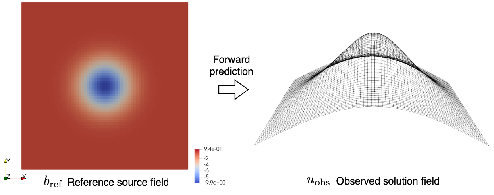

Source field identification#
Problem definition#
In this example, an inverse problem is considered. The design parameter is the source field term. The target of this tutorial is to use JAX-FEM to automatically find the gradient of the objective function with respect to this design variable.
The inverse problem is about identifying an unknown source field \(b\) in a square domain, which is fixed at the left and right sides, based on an observed solution field \(u_{\textrm{obs}}\). The observed solution field \(u_{\textrm{obs}}\) is generated by solving a forward linear Poisson’s problem with a reference source field \(b_{\textrm{ref}}\).
The forward Poisson’s problem follows:
Domain and boundary conditions#
\(\nonumber\Omega =(0,1)\times(0,1)\) (A unit square computational domain)
\(\nonumber\Gamma_D=\{(0, x_2)\cup (1, x_2)\subset\partial\Omega\}\) (Dirichlet boundary)
Weak form#
The corresponding weak form of the PDE is: Find the solution \(u\) such that for any test function \(v\),
If we set \(b\) is to be \(b_{\textrm{ref}}\), we can solve the forward problem and get our solution \(u\) to be \(u_{\textrm{obs}}\).
The inverse problem tries to find \(b\) so that the corresponding \(u\) mataches \(u_{\textrm{obs}}\), and is framed as a PDE-constrained optimization problem:
which minimize the discrepancy between predicted solution \(u\) and observed data \(u_{\textrm{obs}}\).
Implementation#
For the implementation, we first import some necessary modules.
[ ]:
import jax
import jax.numpy as np
# Import JAX-FEM specific modules.
from jax_fem.problem import Problem
from jax_fem.solver import ad_wrapper
from jax_fem.generate_mesh import get_meshio_cell_type, Mesh, rectangle_mesh
Weak form#
The definition of the Poisson problem is shown as follows. In this problem, the parameter to be optimized is the source field \(b\). So, we assign the source field as internal variable self.internal_vars = [θ] in the method set_params. The internal_vars can be later passed to the method get_mass_map with function mass_map as the third argument.
[2]:
class Poisson(Problem):
def get_tensor_map(self):
return lambda x, θ: x
def get_mass_map(self):
def mass_map(u, x, θ):
val = θ
return np.array([val])
return mass_map
def set_params(self, θ):
self.internal_vars = [θ]
Mesh#
Here we use the QUAD4 element to discretize the computational domain.
[3]:
ele_type = 'QUAD4'
cell_type = get_meshio_cell_type(ele_type)
Lx, Ly = 1., 1.
meshio_mesh = rectangle_mesh(Nx=64, Ny=64, domain_x=Lx, domain_y=Ly)
mesh = Mesh(meshio_mesh.points, meshio_mesh.cells_dict[cell_type])
Boundary conditions#
The Dirichlet boundary conditions are defined on the left and right sides of the computational domain.
[4]:
def left(point):
return np.isclose(point[0], 0., atol=1e-5)
def right(point):
return np.isclose(point[0], Lx, atol=1e-5)
def dirichlet_val_left(point):
return 0.
def dirichlet_val_right(point):
return 0.
location_fns = [left, right]
value_fns = [dirichlet_val_left, dirichlet_val_right]
vecs = [0, 0]
dirichlet_bc_info = [location_fns, vecs, value_fns]
Problem#
We have completed all the preliminary preparations for the problem. So, we can proceed to create an instance of our problem.
[ ]:
problem = Poisson(mesh=mesh, vec=1, dim=2, ele_type=ele_type, dirichlet_bc_info=dirichlet_bc_info)
Solver#
Then we can wrap the forward problem with the function ad_wrapper, which enables efficient gradient computation for our inverse problem.
[6]:
fwd_pred = ad_wrapper(problem)
To generate the observed solution field \(u_{\textrm{obs}}\), we define a reference source field \(b_{\textrm{ref}}\) as:
The observed solution \(u_{\textrm{obs}}\) is then obtained by substituting \(b_{\textrm{ref}}\) into the forward problem.
[ ]:
quad_points = problem.fes[0].get_physical_quad_points()
θ_true = -1e5*np.exp(-(np.power(quad_points[:, :, 0] - 0.5, 2) + np.power(quad_points[:, :, 1] - 0.5, 2)) / 0.02)
u_true = fwd_pred(θ_true)
Then we can define the objective funtion, which is the l2 error between predicted solution \(u\) and observed data \(u_{\textrm{obs}}\).
[8]:
def compute_l2_error(problem, sol_list_pred, sol_list_true):
u_pred_quad = problem.fes[0].convert_from_dof_to_quad(sol_list_pred[0]) # (num_cells, num_quads, vec)
u_true_quad = problem.fes[0].convert_from_dof_to_quad(sol_list_true[0]) # (num_cells, num_quads, vec)
l2_error = np.sum((u_pred_quad - u_true_quad)**2 * problem.fes[0].JxW[:, :, None])
return l2_error
def J(θ):
u_pred = fwd_pred(θ)
l2_error = compute_l2_error(problem, u_pred, u_true)
return l2_error
To verify the accuracy of gradients computed using jax.grad, we employ the finite difference method. Note that by JAX-FEM we have grad_value which contains the entire gradient but finite difference can only give a component.
[ ]:
θ_ini = 1e5*np.ones_like(quad_points[:, :, 0])
J_value = J(θ_ini)
grad_value = jax.grad(J)(θ_ini)
h = 1e-2
θ_plus = θ_ini.at[10, 3].set((1+h)*θ_ini[10, 3])
θ_minus = θ_ini.at[10, 3].set((1-h)*θ_ini[10, 3])
dx_fd_1003 = (J(θ_plus) - J(θ_minus))/(2*h*θ_ini[10, 3])
print(f"\n grad_value[10, 3] = {grad_value[10, 3]}, dx_fd_1003 = {dx_fd_1003}")
The computation results are shown as follows:
[ ]:
grad_value[10, 3] = 0.006816018916280742, dx_fd_1003 = 0.0068160189166665075
Please refer to this link to download the source file.